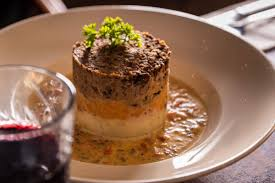

Edinburgh Castle - Historic fortress with great views.
The Royal Mile - Famous street filled with shops and history.
Arthurs Seat - A hill with a beautiful view of the city.
Calton Hill - Easy climb with scenic views.
Dean Village - Peaceful riverside area perfect for photos.
Video with extra tips
Getting arond
Walk as much as possible - Old town and New town are compact and you miss a lot by going on the bus
Lothian Buses - Walking not really your style, well then the lothian buses are a cheap and reliable way to get around. just Download the Tranport for Edinbrugh app for real time routes
Trams - theses trams run between the airport and the City centre and are fast.
Avoid driving - Driving may give you the idea that you can take yourself anywhere, but there is limited parking in the city and renting the cars are exspensive.So its best to avoid driving
Food & Drink
Try traditional Scottish dishes like haggis or enjoy fresh seafood in Leith. Visit local pubs for whisky tasting and live music.
Haggis

Haggis is Scotland’s most famous traditional dish. It’s a savoury pudding made from minced sheep’s heart, liver, and lungs mixed with onion, oats, suet, spices, and stock. The mixture is traditionally cooked in a sheep’s stomach, but most modern versions use a casing instead.
It has a rich, peppery flavour and is usually served with mashed turnips and potatoes. You’ll find it in pubs, restaurants, and even in breakfast menus around Edinburgh and there are plenty of vegetarian haggis options too.
Stovies
Stovies are a traditional Scottish comfort food made by slowly cooking potatoes, onions, and leftover beef or lamb together in one pot. The result is a warm, hearty dish with soft, rich flavours perfect on a chilly Edinburgh evening.
Every household and pub has its own twist, but stovies are always simple, filling, and authentically Scottish.
Traditional music of Edinburgh
The Flowers Of Edinbrugh
Some believe the title may have been a playful or ironic reference to the smells of Edinburgh in the 1700s (when sanitation was poor), but this is debated. Others think it simply refers to the pride or “finest qualities” of the city.
Where you may hear it
Mostly in pubs during flok sessions or preformed by street buskers
Tips for Visitors
Best time to visit: May to September. This is because the weather is balanced and there are fewer crowds comared to other months
August is also a fun time as its Festival month but hotels would be most exspensive and ztreets re packed. But if this is your idea of a holiday then go for it
Winter time is magical if you enjoy Christmas markets and cozy nights, but expect early sunsets.
Map
Incase you get lost, or wish to plan out the sights visually